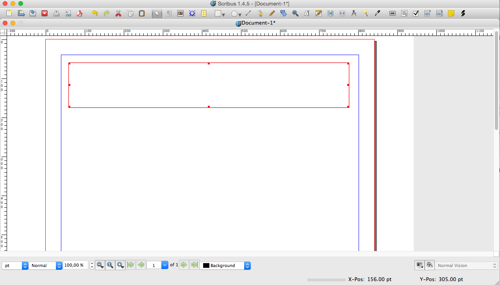
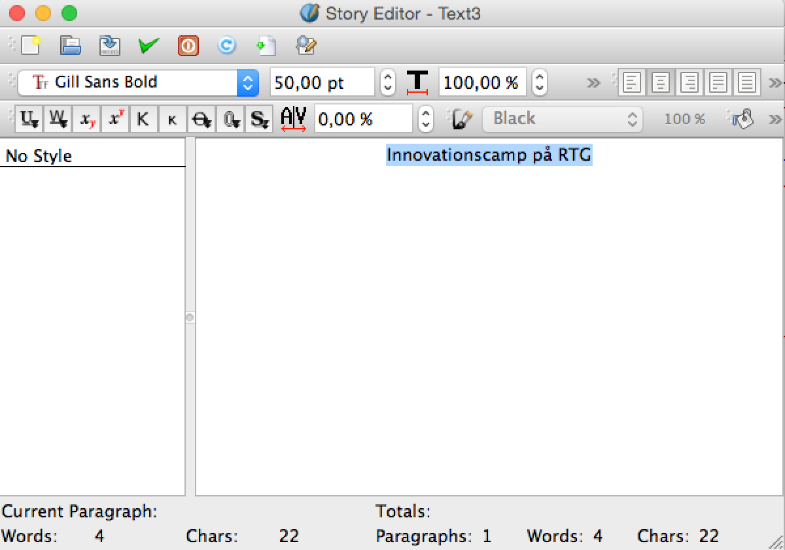
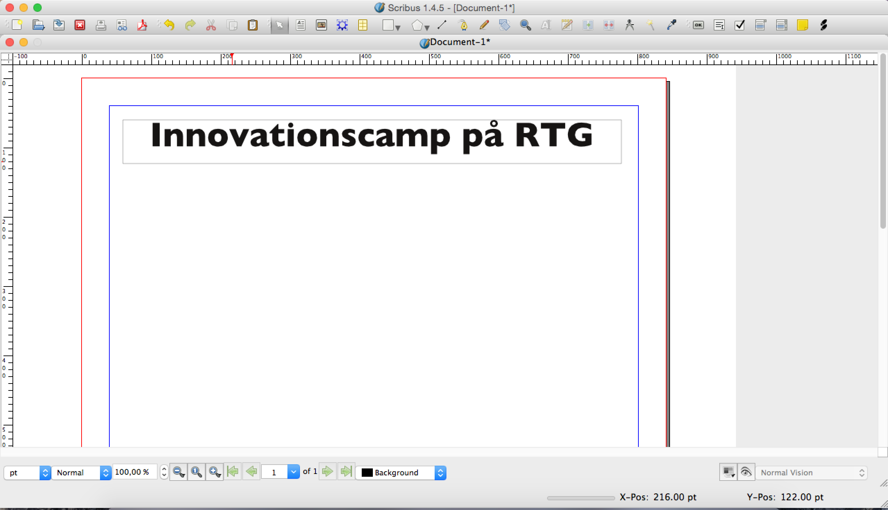
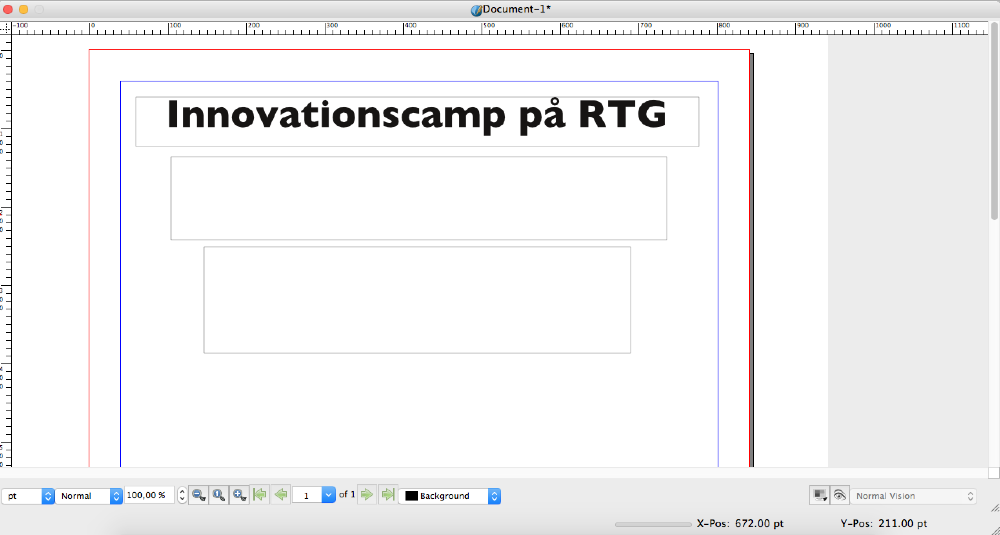
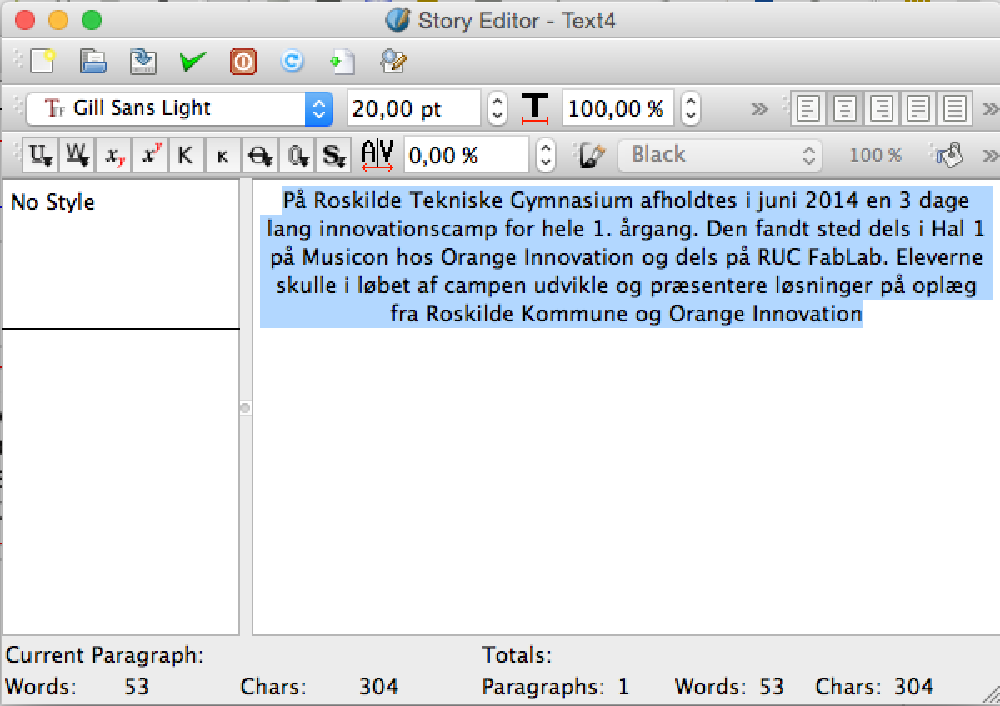
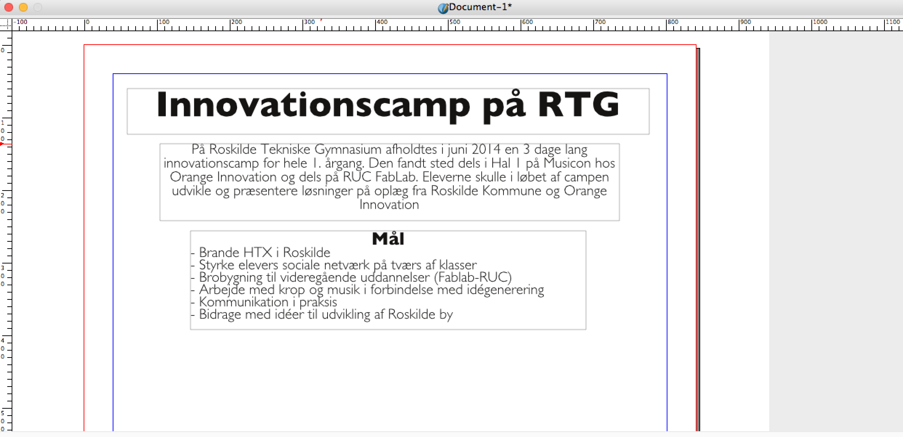
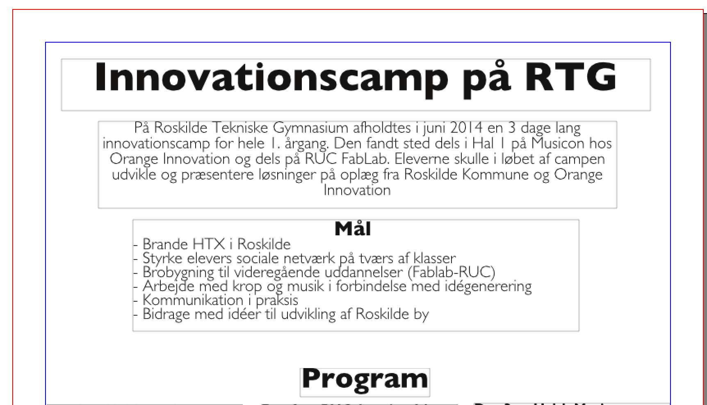
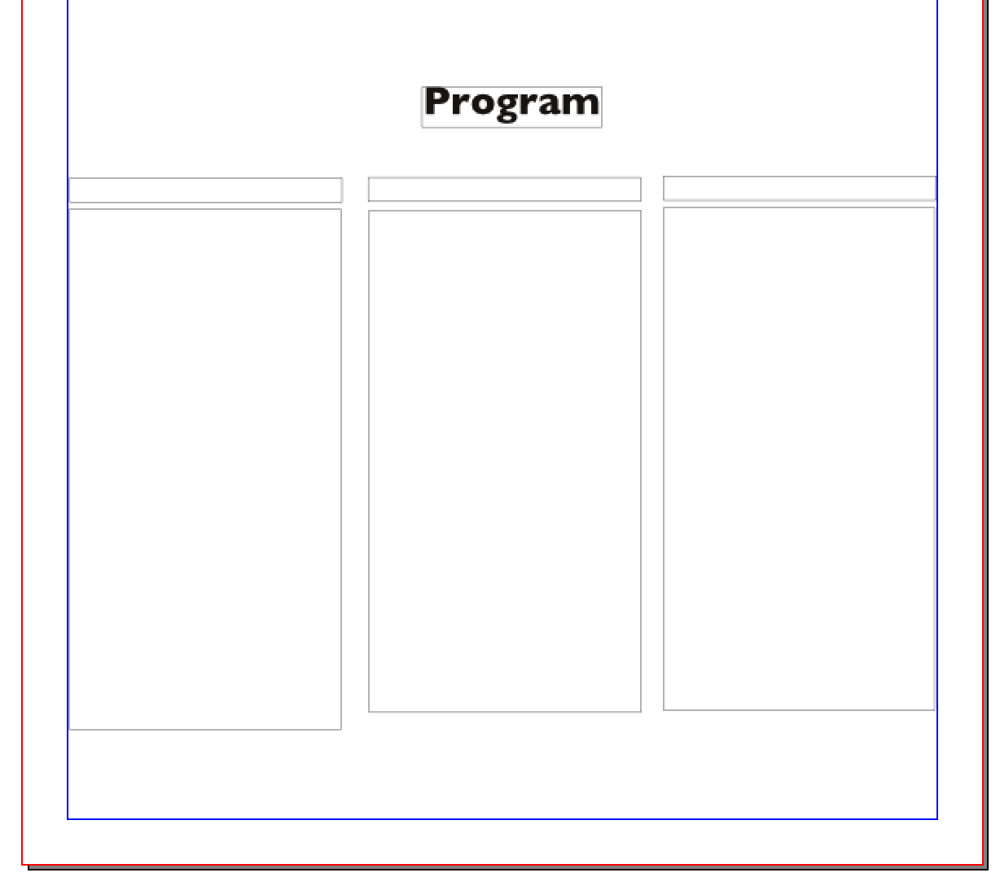
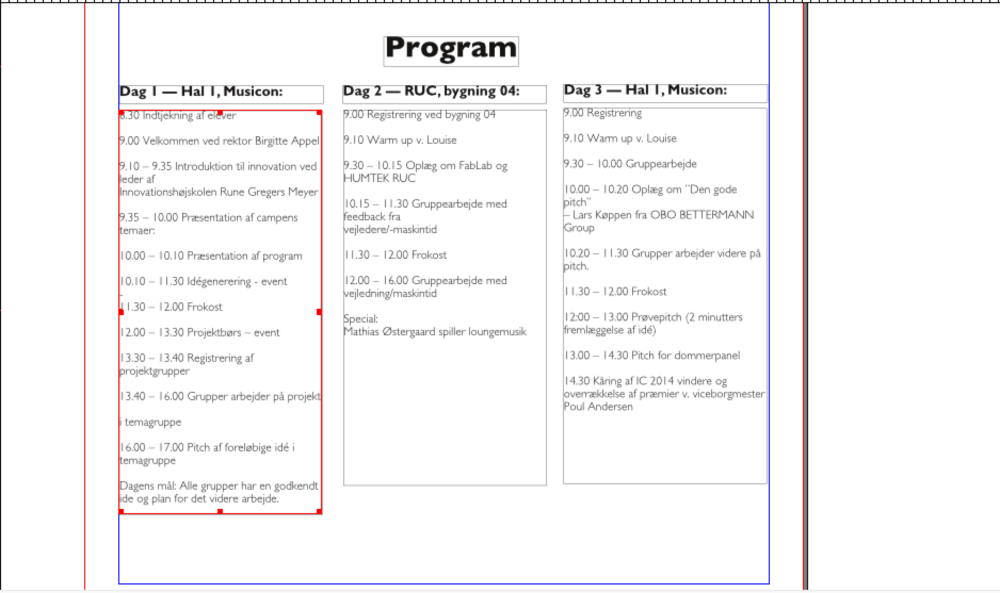
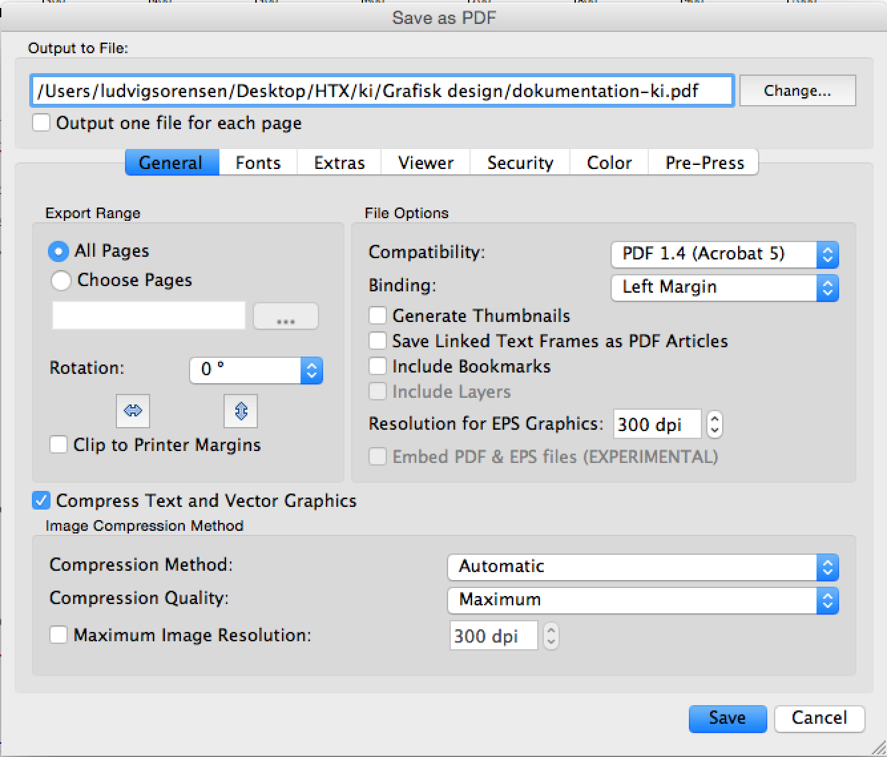

Jeg startede med at lave 4 skitser på papir, her kan man se de 4 fire skitser som jeg tegnede:

Da jeg havde fået nogle ideer ned på papiret, valgte jeg den skitse jeg bedste kunne lide / ville arbejde videre med. Hvilket er den nede i højre hjørne.
Nu ved jeg cirka hvordan jeg vil have min plakat til at se ud. Så jeg vil nu åbne et nyt dokument i Scribus, og det skal være et A3 dokument, ligesom her:
Derefter kan du klikke på dette ikon for at lave en tekstboks:
Når man har klikket på ikonet trækker man en boks ud, ligesom her:
Derefter højreklikker man på tekstboksen, og klikker på edit text.
Så sætter jeg fonten til ‘Gill Sans Bold’, ændre font-størrelsen til 50,00 pt og centrere teksten. Jeg klikker nu på det grønne flueben, det vil gemme ændringerne for mig. Du burde nu have noget lignende det her:
Derefter indsætter jeg 2 nye tekstbokse, så dokumentet cirka kommer til at se sådan her ud:
Man kan nu sætte denne text ind i den øverste tekstboks, ved at klikke ‘edit text’: “På Roskilde Tekniske Gymnasium afholdtes i juni 2014 en 3 dage lang innovationscamp for hele 1. årgang. Den fandt sted dels i Hal 1 på Musicon hos Orange Innovation og dels på RUC FabLab. Eleverne skulle i løbet af campen udvikle og præsentere løsninger på oplæg fra Roskilde Kommune og Orange Innovation”
Nu da teksten er inde i tekst boksen, derefter markerer jeg teksten og sætter fonten til ‘Gill Sans Light’ og derefter gør jeg teksten centreret, her er et billede af hvad jeg har gjort:
Nu vil jeg sætte tekst ind i den næste tekstboks, ved igen at klikke ‘edit text’ på den næste tekst box. Her er teksten:
“
Mål
- Brande HTX i Roskilde
- Styrke elevers sociale netværk på tværs af klasser
- Brobygning til videregående uddannelser (Fablab-RUC)
- Arbejde med krop og musik i forbindelse med idégenerering
- Kommunikation i praksis
- Bidrage med idéer til udvikling af Roskilde by
“
Du kan nu give teksten den samme font, fontstørrelse osv. som den anden tekst boks. Derefter kan du give centrerer ordet ‘Mål’, og give den fonten Gill sans bold, og sætte fontstørrelsen 25,00 pt. Du burde nu have noget der ser sådan her ud:
Nu skal vi til at sætte programmet for de 3 dage ind i plakaten. Vi starter med at sætte en titel ind, ligesom her:
Fonten på titlen skal være ‘Gill Sans Bold’, fontstørrelsen skal være 35,00 pt og teksten skal være centreret.
Nu skal vi sætte programmet for de 3 dage ind på plakaten. Det gør jeg ved at lave 2 tekst bokse som kommer til at se sådan her ud:
Derefter kopiere jeg de 2 tekstbokse 2 gange og sætter dem ind ved siden af hindanden. Det gør jeg ved at holde shift inde og markere begge tekstbokse, derefter trykker jeg på ctrl c og derefter crtl v (for at kopiere det jeg har markeret). Jeg har nu fået kopieret de 2 tekstbokse en gang, nu stiller jeg den kopieret tekstboks ved siden af den originale. Også gentager jeg denne process. Jeg har nu det her:
Jeg kan nu sætte teksten ind. Jeg starter med de små tekst bokse, her er de 3 sætninger der skal være i de 3 øverste tekstbokse:
Derefter vil jeg sætte dagsordenen for de 3 dage ind i de store tekst bokse. Her er teksten jeg vil bruge
Jeg har sat fonten til ‘Gill Sans Light’, jeg har også sat fontstørrelsen til 14,00 pt. Efter du har sat teksten ind og har ændret fonten og fontstørrelsen, burde du have noget der ligner det her:
Note: man skal gøre den første store tekstboks lidt større end de andre så alt teksten kan være der
Nu vil jeg gerne eksportere min plakat det gør jeg ved at klikke på File -> Export -> Save as PDF. Ligesom jeg har gjort på dette billede:
Hvis man gør det for man dette ‘vindue’ op på skærmen:
Her vælger man hvor man vil gemme billedet henne. I mit tilfælde gemmer jeg billedet her: ‘/Users/ludvigsorensen/Desktop/HTX/ki/Grafisk design/dokumentation-ki.pdf’, men du kan selvfølgelig gemme det hvor du vil. Herefter klikker man ‘Save’. og den exportere nu din plakat som et PDF dokument.
Man kan nu finde sin plakat som en PDF fil, der hvor man havde gemt sin plakat. Her er et screenshot af min plakat: